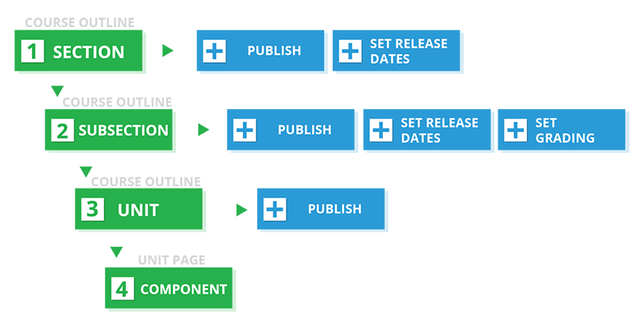
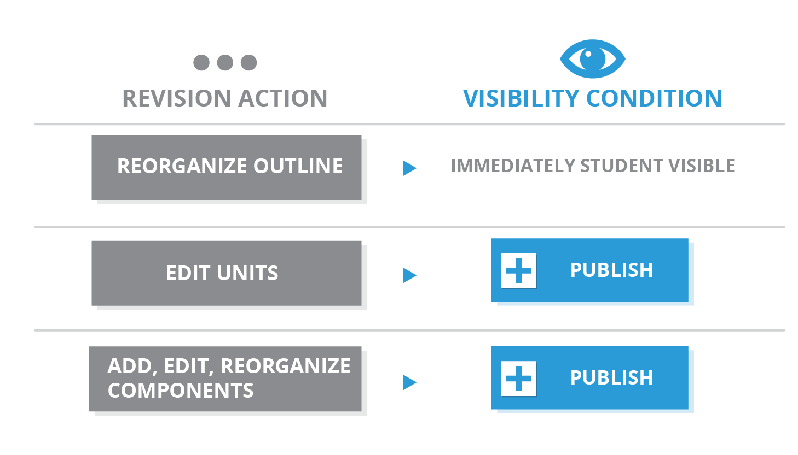

当您完成 setting up your course 之后， 您可以开始创建课程内容。
本章简述建立课程内容过程中涉及的操作步骤，详情请点击以下链接：
在创建课程内容之前，您应该了解组成edX课程内容的要素。
一旦您了解了edX课程的组成方式，您就可以开始组织您的课程内容，并将内容导入Studio。
在:ref:course outline<Developing Your Course Outline> 中创建 sections 、subsections 和 units 。
您也可以通过:ref:set the assignment type and due date<Set the Assignment Type and Due Date for a Subsection> 检测每一小节的学习效果。
在单元页面 create components 。
另外，您也可以通过设置课程发布时间及发布单元来 control content visibility 。
下图总结了创建课程内容的流程：
我们建议您在创建的过程中 test course content 。
在创建课程内容的同时，您还应该考虑何时将课程内容对学生开放。 课程内容的可见性取决于以下几点：
详细信息请见 设置内容可见性.
学生可以在 HTML components 和视频脚本中通过 课件 栏左上角的 搜索 框搜索课程文本。
Studio必须为内容建立索引，学生才能搜索您的课程。当您 publish 时，Studio自动给所有新课程内容建立索引。
如果有必要，您随时可以手动重新建立索引。 一般情况下，您仅在学生看到不希望得到的搜索结果时重建课程内容索引。 在 课程大纲 页面的右上角选择 为内容重建索引 。重建过程只需要不到30秒。
您可以在任何时候校正课程内容。
下图总结了校正课程内容及控制内容可见性的流程
我们建议您在校正内容的同时 test course content 。